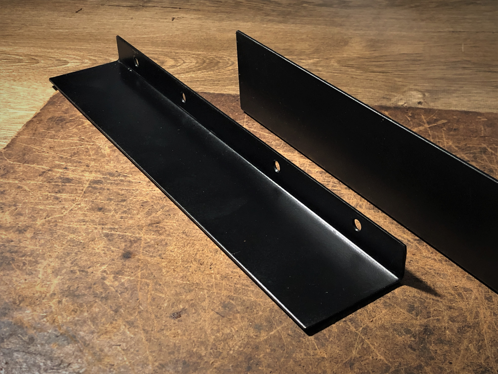
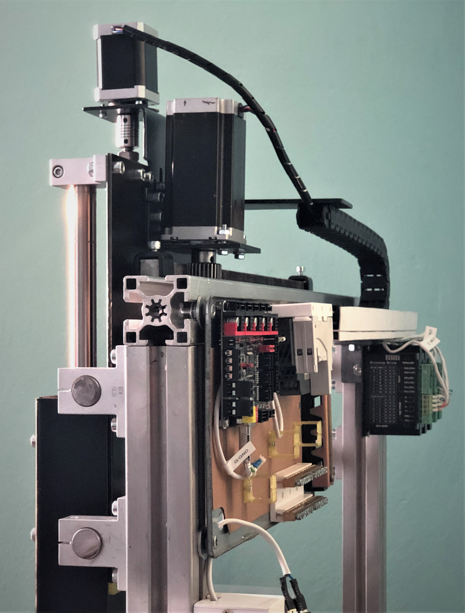
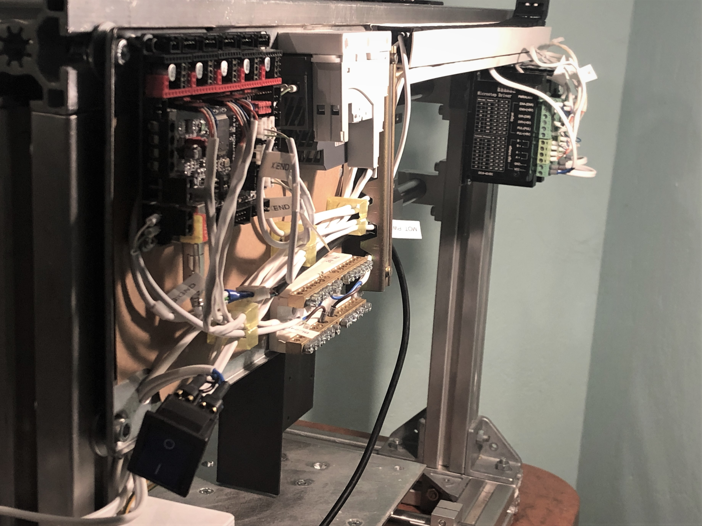
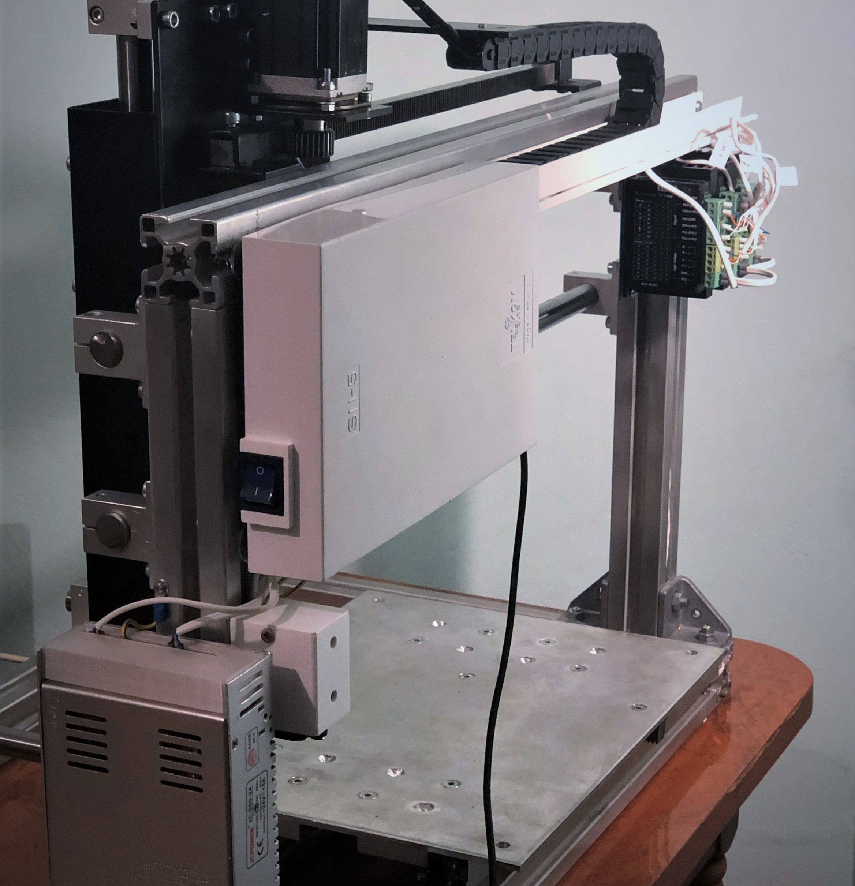
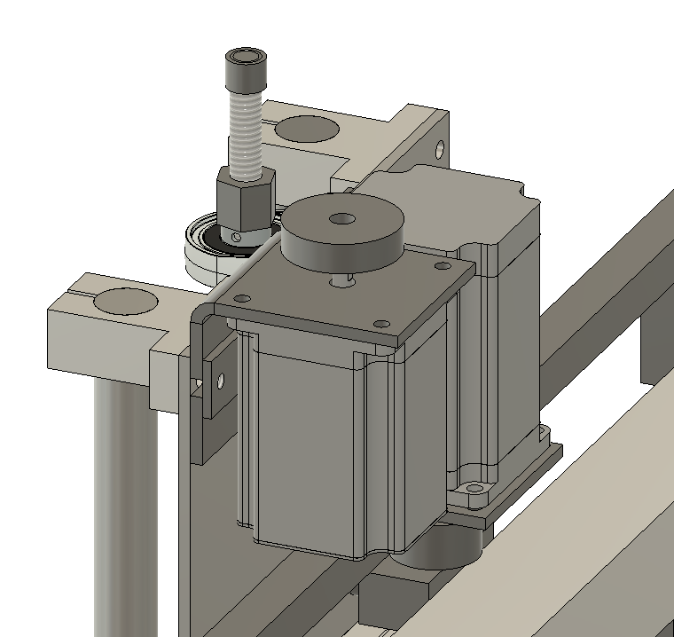
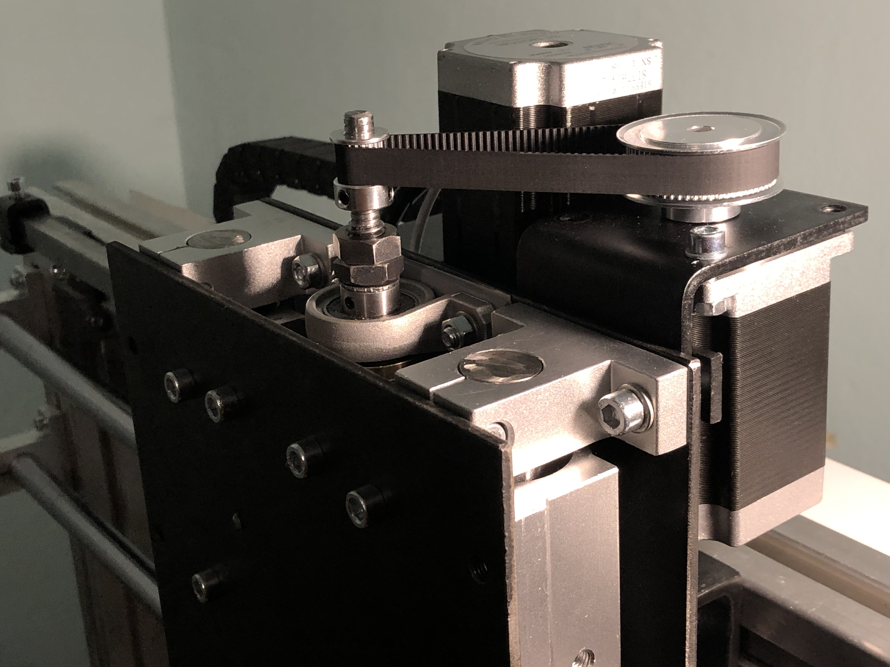
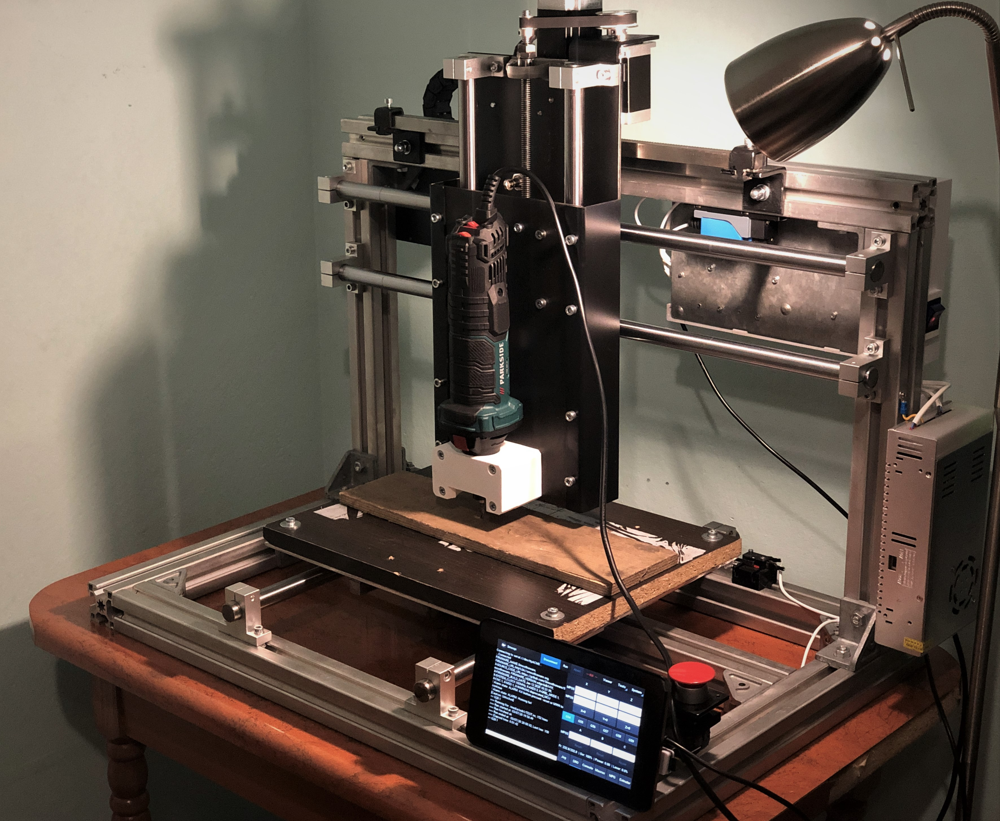

CNC Router - Part 3: Testing

{kind=link}
Adding "backplate" reinforcements
As expected, so-called backplate was showing too much deflection to be acceptable - quick fix was to add L-sections
on both of its sides, preventing bending when loaded.
Wiring electronics

{kind=link}
Import BigTreeTech SKR1.3 acting as a Smoothieware host
Based on All-metal 3D printer experiences, single
electronics cabinet containing all components is not the best solution. With everything packed so tight
cooling is problematic and while maintenance is already difficult, debugging is simply impossible. CNC
Router will have split design with main electronic cabinet with easily detachable cover, 24V power supply
and stepper motor drivers all mounted separately with ease of access in mind.

{kind=link}
Wiring close-up
One possible issue with this wiring schema are 230V lanes right next to signal wires - in case of any
weird misbehavior this is first place to look at.

{kind=link}
Electronics assembly completed
All the electronics are easily accessible. Main controller cover is detachable without any tools, both power supply
and stepper motor controllers are well ventilated. Metal frame is grounded.

{kind=link}
CAD model of new Z axis setup
Just by looking at Z axis one could tell that it would not be powerful enough. While it had the torque required to
move Z axis assembly at slow pace, it was clear it won't have enough power for any rapid movements or drilling
operations.
New design will incorporate 2Nm NEMA23 stepper motor driving trapezoidal screw via 3:1 GT2 belt and pulley setup
enabling it to turn slower, with greater torque (torque vs rpm relation is not linear). GT2 belt can be tensioned by
sliding stepper motor in X axis direction on its mount.

{kind=link}
Completed Z axis transmission
Trapezoidal screw has been turned to 8mm diameter on its end for better fit of GT2 pulley, so locking screw won't
have to bite in between threads.
Test cut in wood

{kind=link}
Setting up the cut
Test cut will consist of simple facing and pocket operations. Those results are actually from second
attempt, after the workpiece was properly mounted (double sided tape was not enough for).
Test cut: facing
This is actually third try. First one failed because of stock wood not being properly attached (it wasn't perfectly flat and double-sided tape had no chance to hold it firmly enough). Second try revealed mistake I made when exporting GCODE from Fusion360, that is selecting only last 2D contour operation instead of whole export. This resulted in router making those deep cuts on the to-be-part perimeters before I finally realized that something is wrong.
{kind=link}